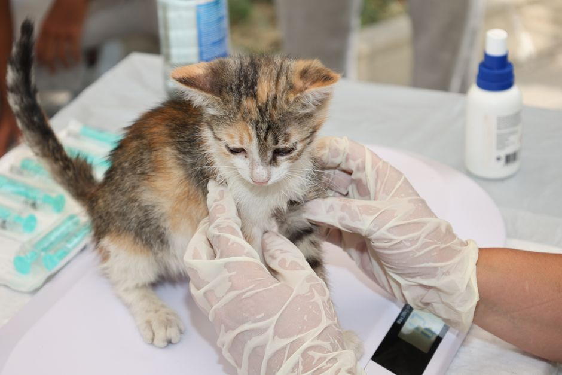
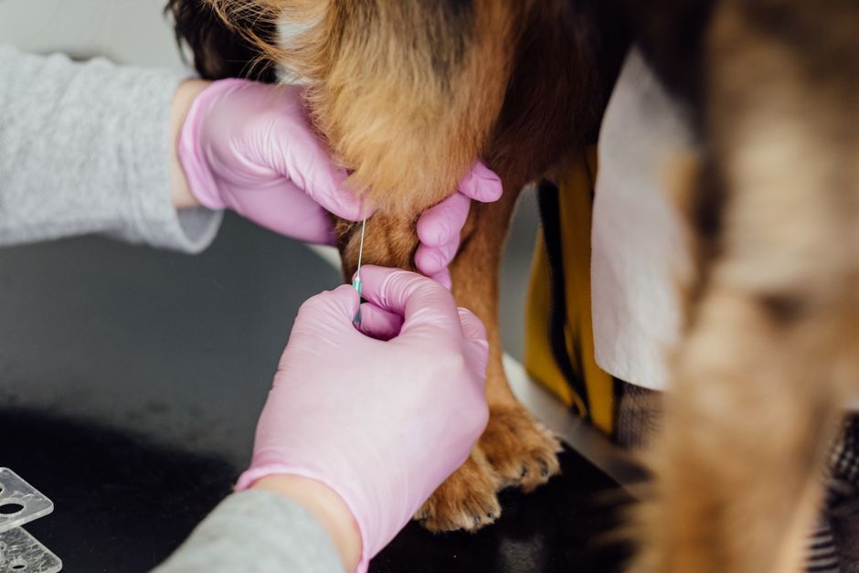

Key Vaccinations Every Pet Owner Needs to Know About
As a new pet owner, ensuring your furry friend stays healthy involves more than just regular check-ups and a healthy diet. Vaccinations are a crucial part of keeping your pet safe from various diseases. This article will guide you through the essential vaccinations every pet should receive to maintain their health.

Photo: Tahir Xəlfəquliyev / Pexels
Understanding Pet Vaccinations
Vaccinations are preventative measures that help protect your pet from contracting serious and potentially life-threatening diseases. These vaccines stimulate the immune system to recognize and fight off specific pathogens, making your pet less likely to contract the disease.
Core Vaccinations for Dogs

Photo: freestocks.org / Pexels
1. Canine Distemper Virus (CDV)
The CDV vaccination is typically given in combination with other vaccines in what is known as the DA2PP (or DA2PP-5) vaccine. It is essential for puppies to receive this vaccine as early as 6 weeks old, with boosters at 9, 12, and 16 weeks. Adults should get a booster once every 3 years.
Example Scenario: A 6-week-old puppy named Max visited the vet for his first vaccination. The vet administered the DA2PP vaccine, which protects him against distemper, parvovirus, adenovirus, and parainfluenza. Max’s parents were relieved to know they were taking a significant step to ensure his long-term health.
2. Canine Hepatitis
Hepatitis is caused by the canine adenovirus (CAV-1 and CAV-2), and while the DA2PP vaccine provides protection against both, a separate vaccine for CAV-1 may be administered as a booster for dogs at high risk.
Actionable Advice: If your dog frequently interacts with other dogs or lives in a high-risk environment, consider consulting your vet about additional protection.
3. Rabies
Rabies is a fatal viral disease that can be transmitted to both animals and humans through the saliva of an infected animal. The rabies vaccine is required by law in many areas and is usually given to puppies between 12 and 16 weeks old, followed by a booster at 1 year, and then every 3 years.
Example Scenario: In a small town, every puppy must receive the rabies vaccine by 16 weeks to comply with local regulations. Max’s parents ensured he was vaccinated at 14 weeks to avoid any legal issues and to keep him safe.
4. Leptospirosis
This bacterial disease is spread through contaminated water and can cause serious kidney and liver damage. The leptospirosis vaccine is usually administered as part of a combination vaccine and is given to puppies starting at 12 weeks, with a booster at 16 weeks.
Actionable Advice: If you live in an area where leptospirosis is common, such as near a lake or stream, ask your vet about the leptospirosis vaccine for your puppy.
Core Vaccinations for Cats
1. Feline Panleukopenia
Feline panleukopenia, also known as feline distemper, is highly contagious and can be fatal. Puppies and kittens should receive the FVRCP vaccine, which includes protection against panleukopenia, calicivirus, and rhinotracheitis. The initial vaccination is given at 8 weeks old, followed by a booster at 12 weeks, and then once a year.
Example Scenario: A 10-week-old kitten named Luna received her first FVRCP vaccine at the vet. Her parents were reassured that this vaccination would protect her against panleukopenia, calicivirus, and rhinotracheitis.
2. Feline Rhinotracheitis and Calicivirus
These two viruses can cause upper respiratory tract infections. They are included in the FVRCP vaccine and should be administered to cats according to the same schedule as mentioned above.
3. Feline Leukemia Virus (FeLV)
FeLV is a virus that can cause severe illness in cats, including cancer and immune system disorders. Kittens should receive the FeLV vaccine at 9 weeks, followed by a second dose at 12 weeks, and then a booster once a year.
Actionable Advice: If your cat goes outdoors or frequently interacts with other cats, discuss with your vet the importance of the FeLV vaccine.
4. Rabies
Just like dogs, cats must also receive the rabies vaccine, usually starting at 12 weeks old, followed by a booster at 1 year, and then every 3 years.
Example Scenario: A 12-week-old kitten named Maxine received her first rabies vaccination. Her parents were relieved to know that this would protect her from rabies for the next 3 years, ensuring she remains safe.
Conclusion
Proper vaccination is a critical part of pet ownership. By following the guidelines above, you can help ensure that your furry friend stays healthy and happy. Remember to consult with your veterinarian to tailor the vaccination schedule to your pet's specific needs and lifestyle.
Stay informed and proactive to safeguard your pet’s health.
Recommended products
As an Amazon Associate, I earn from qualifying purchases.